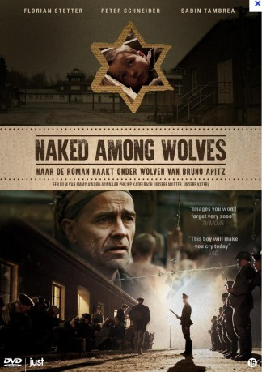

#7809 Nackt unter Wölfen
 
 IMDB-Wertung: 7.2 / 10
IMDB-Wertung: 7.2 / 10  Metascore: 0
Metascore: 0 
Taking place at the Concentration camp Buchenwald at the end of March 1945, prisoner Hans Pippig discovers in a carrying case of an incoming prisoner a Jewish child. If reported the three-year-old is sure to die. On the other hand, a violation of the rules of the camp would threaten the long prepared uprising of the concentration camp prisoners against the SS.
Jahr: 2015
Dauer: 104 Minuten
FSK: 12
Land: Deutschland Studio: ARD Degeto FilmTonspuren:
Untertitel:
Auflösung: 1080p (1920x1080) Größe: 9891 MB
Genre: Drama, Krieg, Geschichte
Regisseur: Philipp Kadelbach
Drehbuch: Bruno Apitz
Soundtrack: Michael Kadelbach
Darsteller:
Datei: X:\2015(N-Z)\Nackt unter Wölfen (2015, FSK12, 1920x1080).mkv seit 20.12.2017
Festplatte: HD 2015(A-Z)
 Es gibt insgesamt 161 Filme in der Gruppe '2015(N-Z)'
Es gibt insgesamt 161 Filme in der Gruppe '2015(N-Z)'